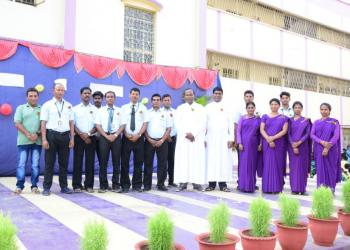
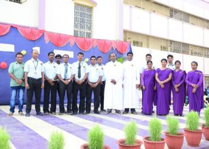
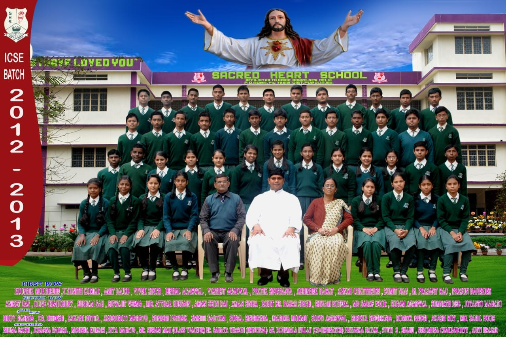
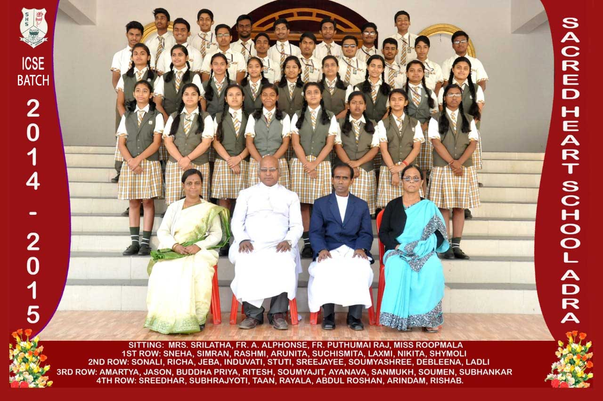
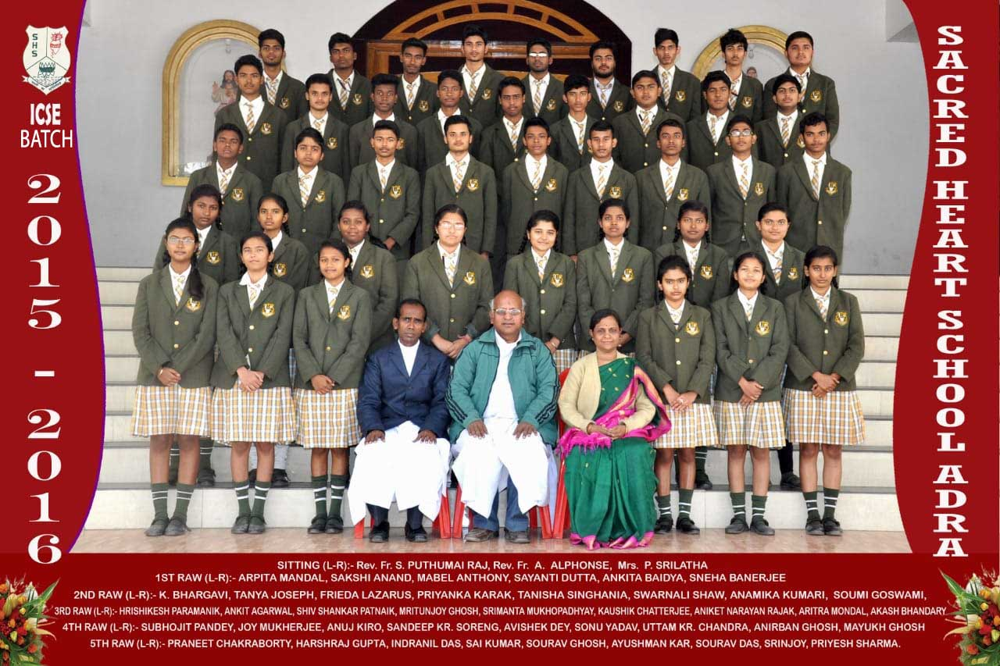
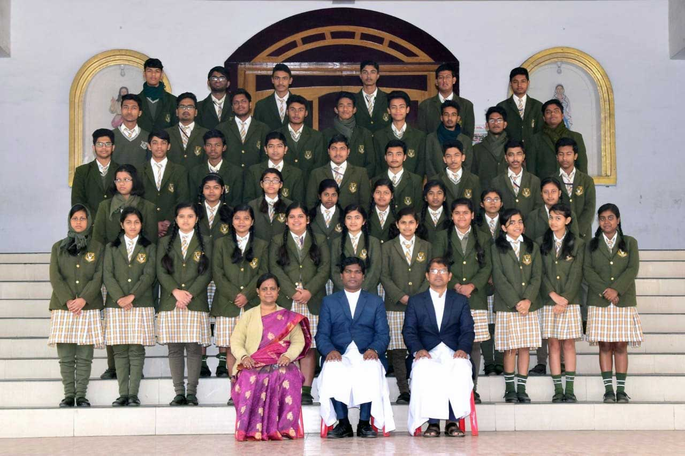
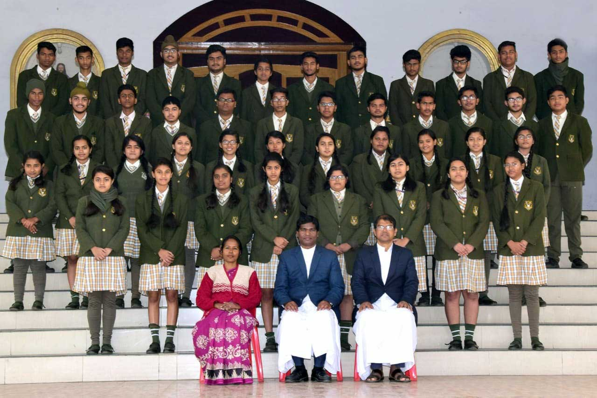
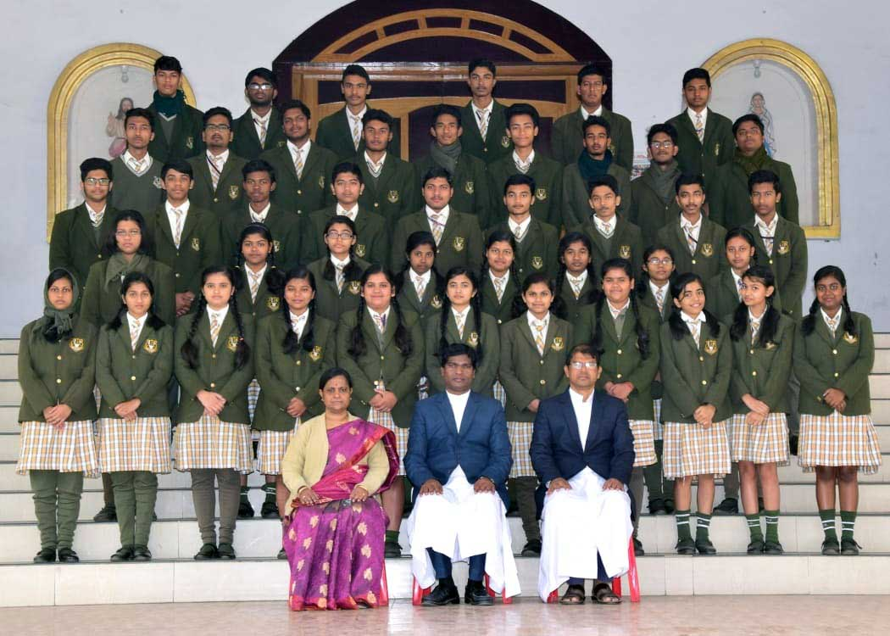

SACRED HEART SCHOOL - ADRA - PURULIA - WEST BENGAL - (WB212)
(A UNIT OF JAMSHEDPUR DIOCESAN EDUCATION SOCIETY, REG. NO. 529/2006)
A CO-EDUCATIONAL ENGLISH MEDIUM SCHOOL AFFILIATED TO CISCE, NEW DELHI
(A UNIT OF JAMSHEDPUR DIOCESAN EDUCATION SOCIETY, REG. NO. 529/2006)
A CO-EDUCATIONAL ENGLISH MEDIUM SCHOOL AFFILIATED TO CISCE, NEW DELHI


 


Here's some BIG news!
We have formed the Sacred Heart School, Alumni Association so you can connect with your former classmates.
If you are or know of Sacred Heart Alumni, we would love to hear from you. Please email us your contact information and passed out year to shs1990adra@yahoo.com. your contact information will not be shared
Sincerely,
SHS, Alumni Association, Adra
Class Photo of X, 2012-2019
  
The church of Sacred Heart, Adra was established in 1918 under the Archdiocese of Calcutta. With the establishment of the hierarchy in India in 1886, the Vicariate Apostolic became the Archdiocese of Calcutta and His Grace, Mgr. Paul Goethals, its first Archbishop. In 1918, when the church of Adra was born, His Grace, Mgr. Brice Meuleman was Archbishop of Calcutta Archdiocese. (First P.P) Emile Courtin was entrusted to serve the people of Adra church. The successors of Fr. Courtin who enthusiastically served the parishioners were dynamic, unique and burning with missionary zeal. The parish was then a centre of 'family and friends' gatherings. The church had a Parochial Hall where several festivities and functions were held like Lotto, Jumble Sale, Christmas Dance, bulgar and milk powder distribution etc. The church building as it stands today was erected in 1928 during the term of Fr. Jules Van Butsele S.J. The parish continued to be under the Archdiocese of Calcutta till 1962 when the Diocese of Jamshedpur was created. It was during His Grace, Archbishop Vivian Deyer of the Bombay diocesan clergy that the 2nd Division of the Archdiocese of Calcutta was prepared and realized which resulted in the erection of three new dioceses, Jamshedpur, Darjeeling and Dumka. Calcutta Diocese lost Purulia district to Jamshedpur diocese and Sacred Heart Parish, Adra came under it. Jamshedpur was then under His Grace, Archbishop Lawrence Trevoe Picachy. However, as narrated by Rev. Fr. Francis Gomes ,an ex-Vicar General of the Calcutta Archdiocese and now retired and staying at St. Thomas Church Presbytery, Kolkata, it was not until 1975 when Sacred Heart Church started receiving the services of Jamshedpur diocese priests. Rev. Fr. Rapheal De Sa was officiating as the Parish Priest until then and he used to commute between Adra and Calcutta occasionally. Ever since, Adra Parish has grown in community and commitment under the Diocesan missionary priests who now enthusiastically carry the torch their predecessors handed to them across this century. Together with the Parish and Asst. Parish priests it is our challenge, it is our opportunity, it is our blessing to lead the Parish into its Second Century with as much vision, optimism and commitment as was exhibited by those who began its First Century.